Run 001 · NR3D visual grounding (v9 catalog-first)
when standing in the middle of the room facing the carts, the correct cart is on the far left. it is near the trash bin with the blue lid.
scannet/scene0565_00::40::23170
正确
GT#40
Selected#40
Confidence0.96
IoU1.0000
SplitHard / View-Dep
Tool calls16
Turn 0 — Agent 看到的初始上下文（v9 catalog-first）
v9 的 build_user_message 只注入 BEV 图像 和 SceneCatalog 文字目录，不 注入任何第一人称关键帧。Agent 必须主动调用 selector / mark_frame_with_bbox（v9.1）或历史 trace 中的 view_keyframe 等工具才能拿到第一人称证据。
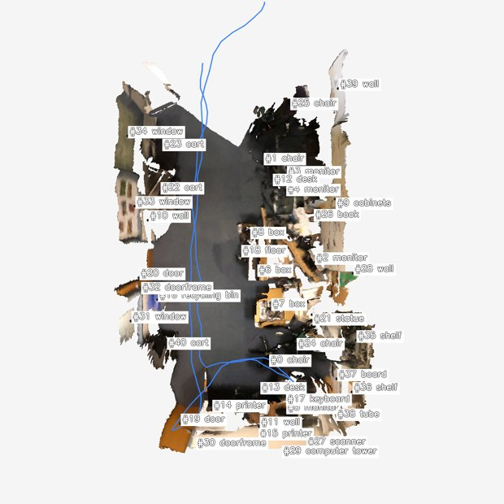
data/nr3d/scannet/scene0565_00/pack_nr3d_v9_catalog_first/bev/scene_bev_nr3d.pngSceneCatalog (`Proposals by category` 块的展开形式)
catalog 为空
Agent 调用栈（每个工具一张卡片）
卡片按真实工具调用顺序展开。tool_input 与 response_text 保留原文（已做长度截断），其它说明为中文。工具家族用左侧色条区分：setup catalog selector view mark bbox legacy reason final。
01 load_skill 加载 playbook 加载技能：scene-exploration-playbook
模型发起的工具输入
{
"skill_name": "scene-exploration-playbook"
}
工具返回（原文，已截断）
# Scene Exploration Playbook (shared, prerequisite) You start each scene with two views: a BEV (top-down) with `#id category` labels + camera trajectory, and a `SceneCatalog` text inventory. Neither is first-person evidence — fetch first-person frames before finalising any answer that depends on appearance, count, state, or relations. ## First move — almost always `select_by_text(query)` `select_by_text(query, k≤3)` runs Stage-1 query parsing and returns up to 3 candidate first-person RGB frames in a single call. This is the shortest path from language to ground truth and should be your default entry point. The returned JSON lists each frame's `visible_proposal_ids` + camera pose so you can decide which of the ≤3 frames is worth a closer look. ## Refinement selectors (after the first batch) Once `select_by_text` returned frames and you know which catalog IDs you're tracking, the catalog-driven selectors are instant and inject their own ≤3 RGB frames: | Selector | When to use | | --- | --- | | `select_by_proposal(ids, require_all, k)` | Frames showing specific catalog IDs (e.g. after text returned wrong instance). | | `select_by_frame_neighbor(anchor_frame_id, mode='temporal'\|'viewpoint_diverse')` | Expand around one good frame. | | `select_by_region(region, region_type='bev_2d'\|'bbox_3d')` | A BEV cluster looks promising — fetch frames overlooking that region. | | `select_by_coverage(method='obj_iou'\|'pose_depth', seen_frame_ids?)` | You need diverse coverage of unseen frames. | All selectors cap `k` at 3. Image dedup is automatic: frames already injected are listed with `already_seen=true` and not re-injected. ## Looking closer at one frame - `mark_frame_with_bbox(frame_id, labels=?, ids=?)` — render a single frame with high-contrast bounding boxes around the labels / ids you named. Requires at least one of `labels` or `ids`. Use this when a selector returned a frame and you want to verify the chosen catalog entry against the actual pixels. - `request_crops(frame_id, bbox_2d)` — pixel zoom into a region of a frame you have already seen. ## Catalog queries (text-only) - `list_scene_proposals(category=?, region_bev=?, limit=?)` — scene-wide. - `list_frame_proposals(frame_id)` — what's visible in one frame. - `inspect_proposal(proposal_id)` — proposal metadata + frames_appeared. ## BEV inspection - `view_bev()` — re-inject the original full BEV. - `view_bev(highlight=[#a, #b])` — re-render the same perspective BEV with only those proposals labelled. ## Anti-patterns - Answering from BEV labels alone. BEV is a map, not ground truth. - Calling `mark_frame_with_bbox` on a frame you have not seen yet (selectors already injected it; mark is for the "verify this one" step). - Calling more than two selectors before any `mark_frame_with_bbox` — that means you are collecting candidates without ever verifying. - `request_crops` before any selector — crops zoom a frame; the host frame must already be in context. ## The loop 1. `select_by_text(query)` (or, when you already know the IDs, `select_by_proposal`). 2. Scan the ≤3 returned frames + the BEV. 3. `mark_frame_with_bbox` on **the** frame that looks decisive. 4. (Optional) `request_crops` for fine attributes; or refine with another selector if step 3 was inconclusive. 5. `submit_final`.
02 load_skill 加载 playbook 加载技能：vg-grounding-playbook
模型发起的工具输入
{
"skill_name": "vg-grounding-playbook"
}
工具返回（原文，已截断）
# VG Grounding Playbook (v9.1)
Prerequisite: `load_skill('scene-exploration-playbook')` first.
You are grounding a natural-language referring expression to **one** proposal in
the SceneCatalog. The output must be a single `proposal_id` (or `-1` if the target
is genuinely absent from the catalog — OOD case).
## Standard flow
1. **Read the BEV image** and the `Proposals by category:` block in the task
message. Identify candidate `#id`s by category (e.g. "brown chair" → all
`chair` proposals).
2. **First move: `select_by_text(query)`** — runs Stage-1 query parsing and
returns ≤3 candidate first-person RGB frames + their `visible_proposal_ids`
in one call. If catalog IDs are already obvious from the BEV labels,
`select_by_proposal(proposal_ids=[candidate ids])` is the direct shortcut.
3. **Verify the chosen candidate** with
`mark_frame_with_bbox(frame_id, ids=[#a, #b, …])` (or
`labels=['chair', …]`). This renders the frame with high-contrast bounding
boxes around the named catalog entries; pixels confirm which proposal the
referring expression matches.
4. **Disambiguate spatial relations** with `compare_proposals_spatial(
candidate_ids=[…], anchor_id=#x, relation='left_of'|'right_of'|'closer_to'|…)`
when the query involves a spatial relation.
5. **Submit** with `submit_final(payload={"proposal_id": <id>}, …)`. The
evidence-frame guard requires that at least one `mark_frame_with_bbox`
call covered the submitted proposal id.
## Tools at a glance
- `select_by_text(query, k=3, hidden_categories?)` — **first move**;
language → ≤3 RGB candidate frames.
- `select_by_proposal(proposal_ids, require_all=False, k=3)` — fetch
frames containing specific catalog IDs.
- `select_by_frame_neighbor(anchor_frame_id, mode='temporal'|'viewpoint_diverse')`.
- `select_by_region(region, region_type='bev_2d'|'bbox_3d')`.
- `select_by_coverage(method='obj_iou'|'pose_depth')`.
- `mark_frame_with_bbox(frame_id, labels|ids)` — high-contrast
annotated zoom; required before `submit_final` for VG (see
evidence_frame_guard).
- `list_frame_proposals(frame_id)`, `list_scene_proposals(...)`,
`inspect_proposal(id)` — text-only catalog queries.
- `view_bev(highlight=[ids])` — re-render BEV focused on subset.
- `compare_proposals_spatial(candidate_ids, anchor_id, relation)` —
spatial disambiguation (TADG-relevant).
## Guards (read this before submit)
- **TADG** (Target-Anchor Disambiguation Guard): if the query mentions an
anchor (e.g. "next to the kitchen counter"), TADG will block submission
unless `compare_proposals_spatial` proved the chosen proposal satisfies the
relation. If TADG fires, run the comparison and resubmit.
- **no_match_guard**: if selectors did not surface any candidate of the
queried category, submit `proposal_id=-1` (OOD).
- **evidence_frame_guard**: at least one `mark_frame_with_bbox` call whose
filter (`ids=` or `labels=`) covers the submitted proposal id must appear
in the trace. Plain RGB injection via a selector does not satisfy this
guard.
## OOD policy
If after exhaustive selectors + ≥3 `mark_frame_with_bbox` calls you cannot
locate the referent, submit `proposal_id=-1` with a rationale explaining what
categories / regions you searched. Do not invent an `id`.
## Anti-patterns
- Submitting based on BEV labels alone (no `mark_frame_with_bbox`).
- Calling `mark_frame_with_bbox` on a frame you have not seen yet (it must
come from a selector first).
- Calling more than two selectors before any `mark_frame_with_bbox` — that
means you are collecting candidates without ever verifying.
- Querying `request_crops` before any selector returned a host frame.
03 select_by_text 按文本搜帧 文本 query=「carts near the trash bin with the blue lid, viewed from the middle of the room facing the carts, far left cart」 top-3：ERROR: runtime.keyframe_selector is None; cannot run Stage-1 text retrieval
模型发起的工具输入
{
"query": "carts near the trash bin with the blue lid, viewed from the middle of the room facing the carts, far left cart",
"k": 3,
"hidden_categories": [
"wall",
"floor"
]
}
工具返回（原文，已截断）
ERROR: runtime.keyframe_selector is None; cannot run Stage-1 text retrieval
04 view_bev 查看 BEV BEV 重渲染 highlight=[16, 22, 23, 40]
模型发起的工具输入
{
"highlight": [
16,
22,
23,
40
]
}
工具返回（原文，已截断）
bev image at data/nr3d/scannet/scene0565_00/pack_nr3d_v9_catalog_first/bev/highlights/bev_h_16_22_23_40.png; highlight=[16, 22, 23, 40]
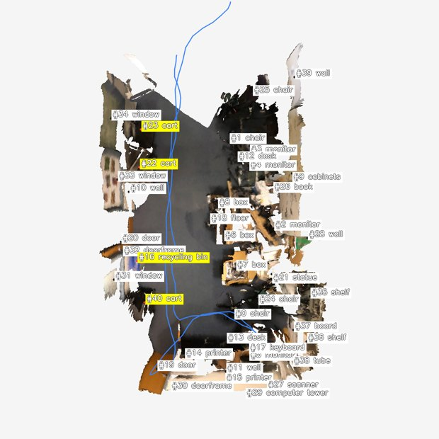
data/nr3d/scannet/scene0565_00/pack_nr3d_v9_catalog_first/bev/highlights/bev_h_16_22_23_40.png
05 select_by_proposal 按候选 id 搜帧 按 proposal_ids=[16, 22, 23, 40] 搜帧：返回 3 帧 [0:000000-rgb.png, 1:000010-rgb.png, 2:000020-rgb.png]
模型发起的工具输入
{
"proposal_ids": [
16,
22,
23,
40
],
"require_all": false,
"k": 3
}
工具返回（原文，已截断）
{"hypothesis_summary": "", "frames": [{"frame_id": 0, "visible_proposal_ids": [1, 6, 8, 12, 22, 23, 32, 33, 34], "bev_xy": null, "camera_yaw": null, "selected_because": "select_by_proposal(proposal_ids=[16, 22, 23, 40], require_all=False)", "image_path": "data/nr3d/scannet/scene0565_00/raw/000000-rgb.png", "already_seen": false}, {"frame_id": 1, "visible_proposal_ids": [1, 8, 12, 22, 23, 32, 33, 34], "bev_xy": null, "camera_yaw": null, "selected_because": "select_by_proposal(proposal_ids=[16, 22, 23, 40], require_all=False)", "image_path": "data/nr3d/scannet/scene0565_00/raw/000010-rgb.png", "already_seen": false}, {"frame_id": 2, "visible_proposal_ids": [1, 6, 8, 12, 20, 22, 23, 32, 33, 34], "bev_xy": null, "camera_yaw": null, "selected_because": "select_by_proposal(proposal_ids=[16, 22, 23, 40], require_all=False)", "image_path": "data/nr3d/scannet/scene0565_00/raw/000020-rgb.png", "already_seen": false}]}
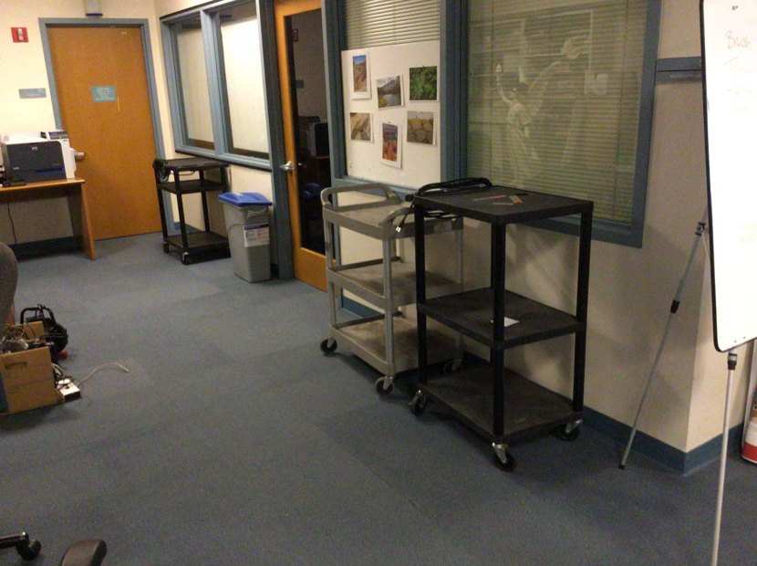
data/nr3d/scannet/scene0565_00/raw/000000-rgb.png

data/nr3d/scannet/scene0565_00/raw/000010-rgb.png
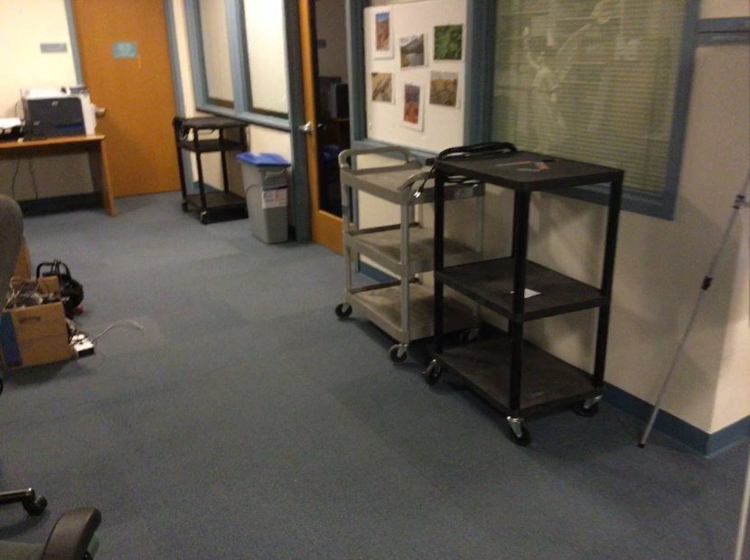
data/nr3d/scannet/scene0565_00/raw/000020-rgb.png
06 mark_frame_with_bbox 带框标注帧 (v9.1) 带框标注 · frame 0 · labels=['cart', 'recycling bin'] · ids=[16, 22, 23, 40] · marked_file=frame_0_ids_22_23.png
模型发起的工具输入
{
"frame_id": 0,
"labels": [
"cart",
"recycling bin"
],
"ids": [
16,
22,
23,
40
]
}
工具返回（原文，已截断）
frame_id=0 mark image at data/nr3d/scannet/scene0565_00/pack_nr3d_v9_catalog_first/bev/filtered_marks/frame_0_ids_22_23.png; filtered_by={'labels': ['cart', 'recycling bin'], 'ids': [16, 22, 23, 40]}; visible_proposals=[22, 23]; categories=['cart', 'cart']; left_to_right=['22:cart', '23:cart']; boxes_2d={22: [549, 308, 807, 675], 23: [703, 308, 1015, 802]}
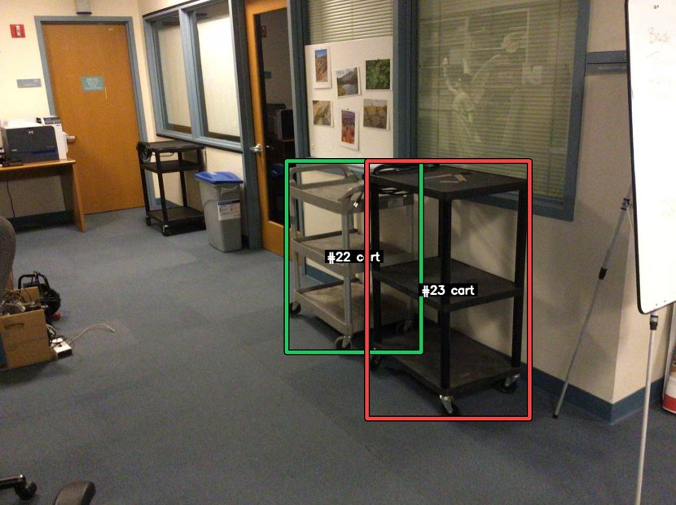
data/nr3d/scannet/scene0565_00/pack_nr3d_v9_catalog_first/bev/filtered_marks/frame_0_ids_22_23.png
07 select_by_frame_neighbor 按相邻帧搜帧 以 frame None 为锚搜邻帧：返回 3 帧 [1:000010-rgb.png, 2:000020-rgb.png, 3:000030-rgb.png]
模型发起的工具输入
{
"anchor_frame_id": 0,
"mode": "viewpoint_diverse",
"k": 3
}
工具返回（原文，已截断）
{"hypothesis_summary": "", "frames": [{"frame_id": 1, "visible_proposal_ids": [1, 8, 12, 22, 23, 32, 33, 34], "bev_xy": null, "camera_yaw": null, "selected_because": "select_by_frame_neighbor(anchor=0, mode='viewpoint_diverse')", "image_path": "data/nr3d/scannet/scene0565_00/raw/000010-rgb.png", "already_seen": false}, {"frame_id": 2, "visible_proposal_ids": [1, 6, 8, 12, 20, 22, 23, 32, 33, 34], "bev_xy": null, "camera_yaw": null, "selected_because": "select_by_frame_neighbor(anchor=0, mode='viewpoint_diverse')", "image_path": "data/nr3d/scannet/scene0565_00/raw/000020-rgb.png", "already_seen": false}, {"frame_id": 3, "visible_proposal_ids": [1, 6, 8, 12, 20, 22, 23, 32, 33, 34], "bev_xy": null, "camera_yaw": null, "selected_because": "select_by_frame_neighbor(anchor=0, mode='viewpoint_diverse')", "image_path": "data/nr3d/scannet/scene0565_00/raw/000030-rgb.png", "already_seen": false}]}
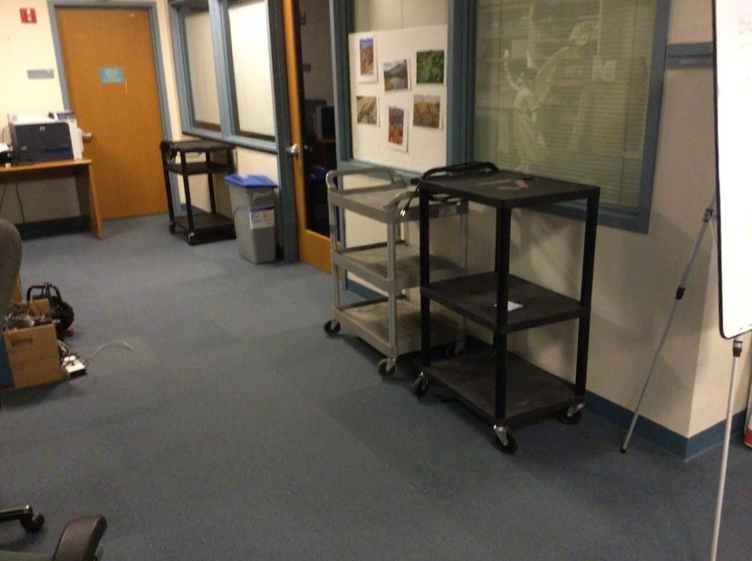
data/nr3d/scannet/scene0565_00/raw/000010-rgb.png

data/nr3d/scannet/scene0565_00/raw/000020-rgb.png
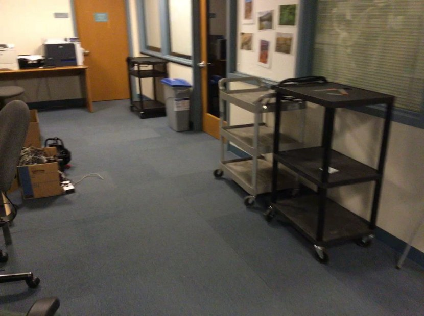
data/nr3d/scannet/scene0565_00/raw/000030-rgb.png
08 inspect_proposal 检查候选元数据 候选 #16（recycling bin），出现于 14 帧
模型发起的工具输入
{
"proposal_id": 16
}
工具返回（原文，已截断）
{"proposal_id": 16, "category": "recycling bin", "score": 1.0, "bbox_3d_9dof": [-2.0351624763014184, -0.679725072813678, 0.3396843891908415, 0.34902875079980933, 0.5907063493793525, 0.7239925286693008, 0.1561818067147192, 0.19304029163816838, 0.02440819828751095], "frames_appeared": [4, 5, 6, 7, 8, 9, 10, 11, 12, 13, 14, 15, 105, 106], "source": "gt"}
09 inspect_proposal 检查候选元数据 候选 #40（cart），出现于 14 帧
模型发起的工具输入
{
"proposal_id": 40
}
工具返回（原文，已截断）
{"proposal_id": 40, "category": "cart", "score": 1.0, "bbox_3d_9dof": [-1.8343967147838434, -1.5919540544563096, 0.43531955000688105, 0.4746685244420983, 0.7143492549882645, 0.9275031475307938, 0.15074163833691798, -0.13072168813628915, -0.08135933719526667], "frames_appeared": [8, 9, 10, 11, 12, 13, 14, 15, 16, 17, 18, 104, 105, 106], "source": "gt"}
10 mark_frame_with_bbox 带框标注帧 (v9.1) 带框标注 · frame 1 · ids=[22, 23] · marked_file=frame_1_ids_22_23.png
模型发起的工具输入
{
"frame_id": 1,
"labels": [],
"ids": [
22,
23
]
}
工具返回（原文，已截断）
frame_id=1 mark image at data/nr3d/scannet/scene0565_00/pack_nr3d_v9_catalog_first/bev/filtered_marks/frame_1_ids_22_23.png; filtered_by={'labels': [], 'ids': [22, 23]}; visible_proposals=[22, 23]; categories=['cart', 'cart']; left_to_right=['22:cart', '23:cart']; boxes_2d={22: [558, 283, 820, 653], 23: [715, 285, 1027, 784]}
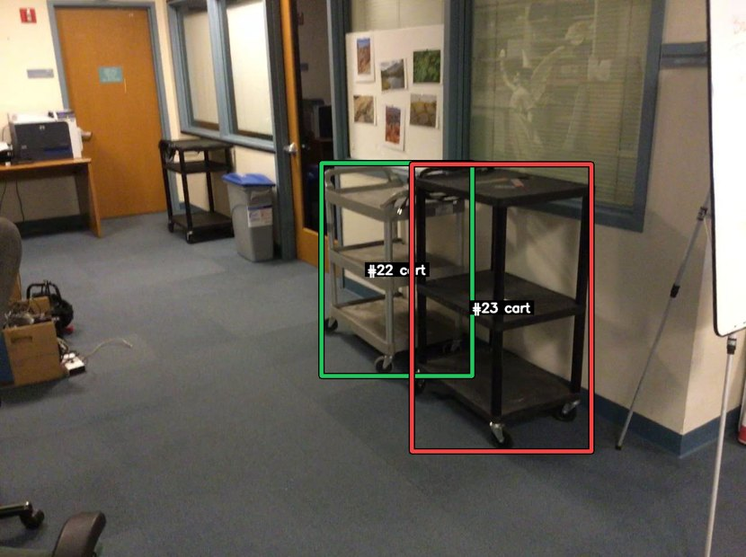
data/nr3d/scannet/scene0565_00/pack_nr3d_v9_catalog_first/bev/filtered_marks/frame_1_ids_22_23.png
11 select_by_proposal 按候选 id 搜帧 按 proposal_ids=[16, 40] 搜帧：返回 3 帧 [8:000080-rgb.png, 9:000090-rgb.png, 10:000100-rgb.png]
模型发起的工具输入
{
"proposal_ids": [
16,
40
],
"require_all": true,
"k": 3
}
工具返回（原文，已截断）
{"hypothesis_summary": "", "frames": [{"frame_id": 8, "visible_proposal_ids": [1, 6, 7, 8, 12, 16, 20, 21, 22, 31, 32, 33, 40], "bev_xy": null, "camera_yaw": null, "selected_because": "select_by_proposal(proposal_ids=[16, 40], require_all=True)", "image_path": "data/nr3d/scannet/scene0565_00/raw/000080-rgb.png", "already_seen": false}, {"frame_id": 9, "visible_proposal_ids": [0, 6, 7, 8, 16, 20, 21, 22, 24, 31, 32, 33, 40], "bev_xy": null, "camera_yaw": null, "selected_because": "select_by_proposal(proposal_ids=[16, 40], require_all=True)", "image_path": "data/nr3d/scannet/scene0565_00/raw/000090-rgb.png", "already_seen": false}, {"frame_id": 10, "visible_proposal_ids": [0, 6, 7, 8, 16, 20, 21, 22, 24, 31, 32, 40], "bev_xy": null, "camera_yaw": null, "selected_because": "select_by_proposal(proposal_ids=[16, 40], require_all=True)", "image_path": "data/nr3d/scannet/scene0565_00/raw/000100-rgb.png", "already_seen": false}]}
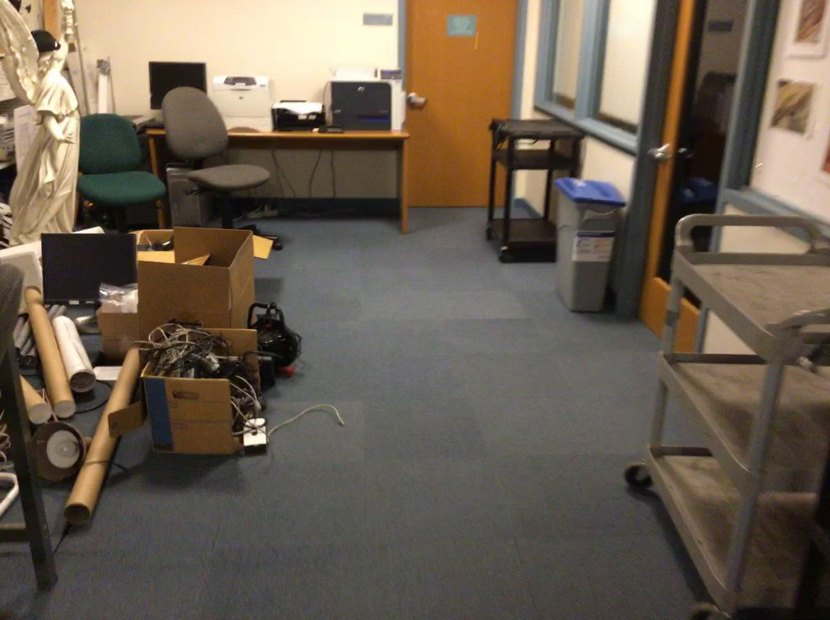
data/nr3d/scannet/scene0565_00/raw/000080-rgb.png
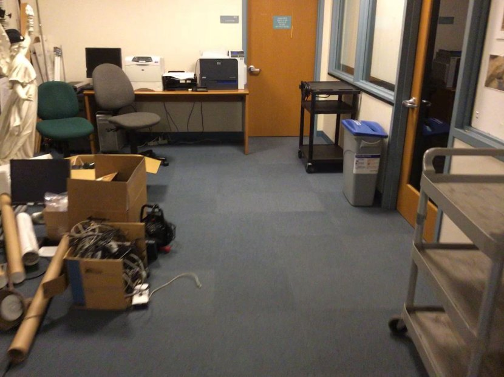
data/nr3d/scannet/scene0565_00/raw/000090-rgb.png
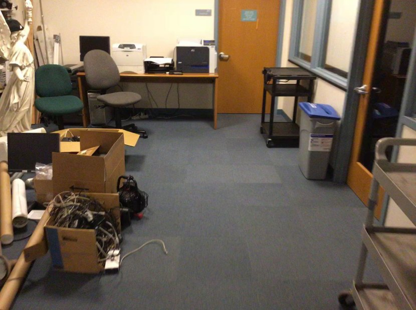
data/nr3d/scannet/scene0565_00/raw/000100-rgb.png
12 mark_frame_with_bbox 带框标注帧 (v9.1) 带框标注 · frame 8 · labels=['cart', 'recycling bin'] · ids=[16, 22, 40] · marked_file=frame_8_ids_16_22_40.png
模型发起的工具输入
{
"frame_id": 8,
"labels": [
"cart",
"recycling bin"
],
"ids": [
16,
22,
40
]
}
工具返回（原文，已截断）
frame_id=8 mark image at data/nr3d/scannet/scene0565_00/pack_nr3d_v9_catalog_first/bev/filtered_marks/frame_8_ids_16_22_40.png; filtered_by={'labels': ['cart', 'recycling bin'], 'ids': [16, 22, 40]}; visible_proposals=[40, 16, 22]; categories=['cart', 'recycling bin', 'cart']; left_to_right=['40:cart', '16:recycling bin', '22:cart']; boxes_2d={40: [785, 176, 904, 411], 16: [873, 268, 987, 488], 22: [989, 327, 1295, 967]}
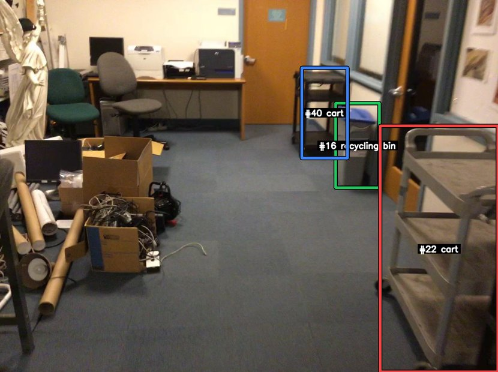
data/nr3d/scannet/scene0565_00/pack_nr3d_v9_catalog_first/bev/filtered_marks/frame_8_ids_16_22_40.png
13 compare_proposals_spatial 几何关系排序 relation=left_of anchor=#16 排序=[40, 22]
模型发起的工具输入
{
"candidate_ids": [
22,
40
],
"anchor_id": 16,
"relation": "left_of"
}
工具返回（原文，已截断）
{"anchor_id": 16, "relation": "left_of", "ranked_ids": [40, 22], "distances": [0.9389433901630034, 2.097663542146119], "horizontal_distances": [0.934060279610735, 2.0894379820150983], "vertical_offsets": [0.09563516081603957, 0.18558355358618112], "x_offsets": [0.20076576151757508, 0.10362159775441948], "shared_frame_counts": [10, 8], "mean_2d_center_offsets_x": [-117.1, 230.3125], "supporting_frame_counts": [10, 0], "contradicting_frame_counts": [0, 8]}
14 submit_final 提交最终答案 提交 {'proposal_id': 40, 'confidence': 0.88}；理由：Proposal 40 is the best match. In marked frame 8, the recycling bin with the blue lid (#16) appears between two carts: cart #40 is on the left and cart #22 is on the right. The query asks for the cart on the far left when facing the carts a
模型发起的工具输入
{
"payload": {
"proposal_id": 40,
"confidence": 0.88
},
"rationale": "Proposal 40 is the best match. In marked frame 8, the recycling bin with the blue lid (#16) appears between two carts: cart #40 is on the left and cart #22 is on the right. The query asks for the cart on the far left when facing the carts and near the blue-lid bin, which matches #40. This is also supported by compare_proposals_spatial(anchor_id=16, candidate_ids=[22,40], relation='left_of'), which ranks #40 ahead of #22. Earlier marked frames 0 and 1 show carts #22 and #23 without the bin, so they are weaker matches for the anchor-based description.",
"evidence_refs": [],
"tadg_blocked": false,
"tadg_force_passed": false,
"tadg_top1_pid": null,
"tadg_submitted_pid": null,
"tadg_relation": null,
"tadg_anchor_id": null,
"tadg_subcase": null,
"tadg_ranked_ids": null,
"tadg_message": null,
"no_match_guard_blocked": false,
"no_match_guard_force_passed": false,
"no_match_guard_category_candidate_ids": null,
"no_match_guard_category_candidate_labels": null,
"no_match_guard_viewed_uninspected_ids": null,
"no_match_guard_viewed_uninspected_labels": null,
"no_match_guard_message": null,
"evidence_frame_guard_blocked": false,
"evidence_frame_guard_submitted_pid": 40,
"evidence_frame_guard_cited_frame_ids": [
8
],
"evidence_frame_guard_visible_proposal_ids": null,
"evidence_frame_guard_visible_proposal_labels": null,
"evidence_frame_guard_relative_position_conflict": false,
"evidence_frame_guard_relative_position_direction": null,
"evidence_frame_guard_relative_position_alternatives": null,
"evidence_frame_guard_relative_position_alternative_labels": null,
"evidence_frame_guard_message": null
}
工具返回（原文，已截断）
submitted; rationale="Proposal 40 is the best match. In marked frame 8, the recycling bin with the blue lid (#16) appears between two carts: cart #40 is on the left and cart #22 is on the right. The query asks for the cart on the far left when facing the carts and near the blue-lid bin, which matches #40. This is also supported by compare_proposals_spatial(anchor_id=16, candidate_ids=[22,40], relation='left_of'), which ranks #40 ahead of #22. Earlier marked frames 0 and 1 show carts #22 and #23 without the bin, so they are weaker matches for the anchor-based description."; evidence_refs=0
15 mark_frame_with_bbox 带框标注帧 (v9.1) 带框标注 · frame 15 · labels=['cart', 'recycling bin'] · ids=[16, 40, 22, 23] · marked_file=frame_15_ids_16_40.png
模型发起的工具输入
{
"frame_id": 15,
"labels": [
"cart",
"recycling bin"
],
"ids": [
16,
40,
22,
23
]
}
工具返回（原文，已截断）
frame_id=15 mark image at data/nr3d/scannet/scene0565_00/pack_nr3d_v9_catalog_first/bev/filtered_marks/frame_15_ids_16_40.png; filtered_by={'labels': ['cart', 'recycling bin'], 'ids': [16, 40, 22, 23]}; visible_proposals=[40, 16]; categories=['cart', 'recycling bin']; left_to_right=['40:cart', '16:recycling bin']; boxes_2d={40: [953, 254, 1223, 658], 16: [1155, 462, 1295, 915]}
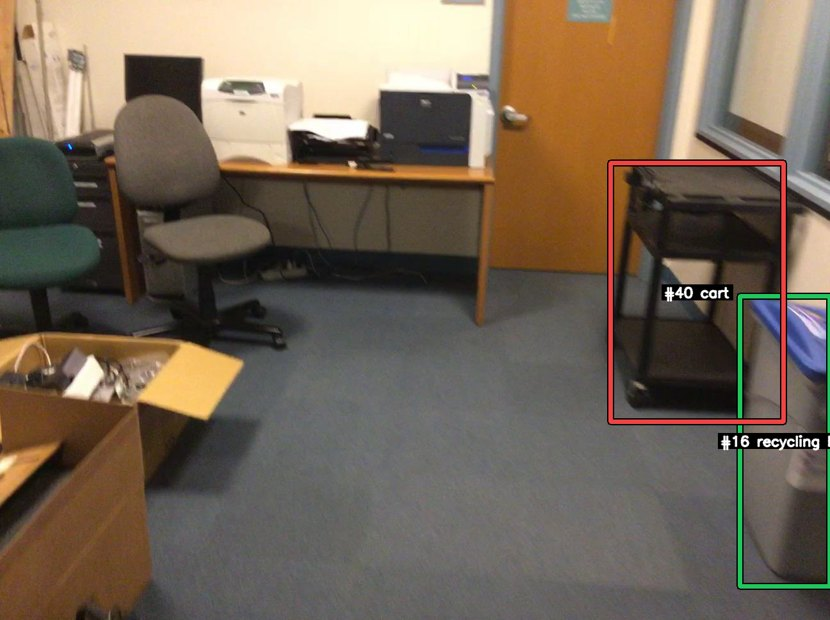
data/nr3d/scannet/scene0565_00/pack_nr3d_v9_catalog_first/bev/filtered_marks/frame_15_ids_16_40.png
16 submit_final 提交最终答案 提交 {'proposal_id': 40, 'confidence': 0.96}；理由：After re-examining the newly injected frames 13, 14, 15, 16, and 105, proposal #40 remains the correct match. These views clearly show a black cart beside the blue-lid recycling bin (#16) along the right wall. In the decisive marked frame 1
模型发起的工具输入
{
"payload": {
"proposal_id": 40,
"confidence": 0.96
},
"rationale": "After re-examining the newly injected frames 13, 14, 15, 16, and 105, proposal #40 remains the correct match. These views clearly show a black cart beside the blue-lid recycling bin (#16) along the right wall. In the decisive marked frame 15, only cart #40 and recycling bin #16 are visible together, and #40 is to the left of #16 in the image, matching 'the cart is on the far left' when facing the carts from the room center. The BEV also supports this: among carts near the recycling bin, #40 is the lower/left cart adjacent to #16, while #22 and #23 are farther up the room and not the cart directly beside the bin in the new evidence. This is consistent with the earlier spatial check ranking #40 as left_of anchor #16 ahead of #22.",
"evidence_refs": [],
"tadg_blocked": false,
"tadg_force_passed": false,
"tadg_top1_pid": null,
"tadg_submitted_pid": null,
"tadg_relation": null,
"tadg_anchor_id": null,
"tadg_subcase": null,
"tadg_ranked_ids": null,
"tadg_message": null,
"no_match_guard_blocked": false,
"no_match_guard_force_passed": false,
"no_match_guard_category_candidate_ids": null,
"no_match_guard_category_candidate_labels": null,
"no_match_guard_viewed_uninspected_ids": null,
"no_match_guard_viewed_uninspected_labels": null,
"no_match_guard_message": null,
"evidence_frame_guard_blocked": false,
"evidence_frame_guard_submitted_pid": 40,
"evidence_frame_guard_cited_frame_ids": [
15
],
"evidence_frame_guard_visible_proposal_ids": null,
"evidence_frame_guard_visible_proposal_labels": null,
"evidence_frame_guard_relative_position_conflict": false,
"evidence_frame_guard_relative_position_direction": "left",
"evidence_frame_guard_relative_position_alternatives": null,
"evidence_frame_guard_relative_position_alternative_labels": null,
"evidence_frame_guard_message": null
}
工具返回（原文，已截断）
submitted; rationale="After re-examining the newly injected frames 13, 14, 15, 16, and 105, proposal #40 remains the correct match. These views clearly show a black cart beside the blue-lid recycling bin (#16) along the right wall. In the decisive marked frame 15, only cart #40 and recycling bin #16 are visible together, and #40 is to the left of #16 in the image, matching 'the cart is on the far left' when facing the carts from the room center. The BEV also supports this: among carts near the recycling bin, #40 is the lower/left cart adjacent to #16, while #22 and #23 are farther up the room and not the cart directly beside the bin in the new evidence. This is consistent with the earlier spatial check ranking #40 as left_of anchor #16 ahead of #22."; evidence_refs=0